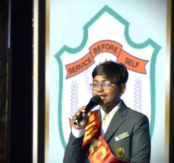

Welcome to my profile on OurSpace!
My name is Nikit and I'm passionate about space exploration, astronomy, and everything related to the wonders of the universe. Here's a little bit about me:
- I'm an avid space enthusiast and love to learn about the latest discoveries in the field.
- I enjoy stargazing and often spend my nights observing celestial objects through my telescope.
- I'm particularly interested in reletavistic astrophysics
- In addition to my interest in space, I also enjoy writing poems, blogging and debating [Check out my blog!.].
- I believe that space exploration is essential for the advancement of humanity and the understanding of our place in the universe.
Feel free to connect with me and share your own space stories!